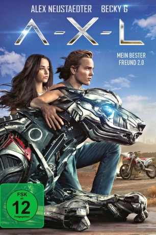

gesehen am 11.08.2019
gesehen am 11.08.2019Alternativ: A-X-L (Englischer Titel) gesehen am 11.08.2019
 
 IMDB-Wertung: 5.2 / 10
IMDB-Wertung: 5.2 / 10  Metascore:
Metascore: 
Teenager Miles hat keinen großen Draht zu seinen Mitschülern. Seine Freizeit widmet er voll und ganz seinem Motocross-Bike. Doch als er mal wieder in der kalifornischen Wüste ist, attackiert ihn der kampfwütige Roboterhund A-X-L. Eine schnelle Verfolgungsjagd später, bei der Miles dem hochentwickelten Tech-Tier lediglich knapp entkommt, schafft er es, A-X-L zu zähmen – wie einen echten Hund. Eine tiefe Freundschaft entsteht. Aber A-X-L verstößt damit gegen die Bestimmung, für die ihn das Militär geschaffen hat. Er soll töten! Die Armee-Wissenschaftler wollen ihre Kampfmaschine zurück und eröffnen die Jagd auf A-X-L. Miles setzt alles daran, seinen neuen Freund zu schützen. Sara hilft ihm. Alle drei geraten damit in sehr große Gefahr ...
Jahr: 2018
Dauer: 98 Minuten
FSK: 12
Land: USA Studio: Global Road EntertainmentTonspuren: DTS - ,
Untertitel:
Auflösung: 1080p (1920x800) Größe: 9093 MB
Genre: Action, Sci-Fi, Abenteuer, Familie
Regisseur: Oliver Daly
Drehbuch: Oliver Daly
Soundtrack: Ian Hultquist
Darsteller:
 Alex MacNicoll als Sam Fontaine
Alex MacNicoll als Sam Fontaine Thomas Jane als Chuck Hill
Thomas Jane als Chuck Hill Lou Taylor Pucci als Randall
Lou Taylor Pucci als Randall Ted McGinley als George Fontaine
Ted McGinley als George Fontaine Sam Upton als Craine Operative Stark
Sam Upton als Craine Operative Stark Eric Etebari als Craine Operative Berman
Eric Etebari als Craine Operative Berman Donnie Smith als Webber Agent #1
Donnie Smith als Webber Agent #1 Dan Callahan als Webber Agent #2
Dan Callahan als Webber Agent #2 Fred Tatasciore als AXL
Fred Tatasciore als AXL Dorian Kingi als AXL (uncredited)
Dorian Kingi als AXL (uncredited)Datei: X:\2018(A-F)\A-X-L - Mein bester Freund 2.0 (2018, FSK12, 1920x800).mkv seit 29.07.2019
Festplatte: HD 2017(A-Z)-2018(A-F)
 Es gibt insgesamt 151 Filme in der Gruppe '2018(A-F)'
Es gibt insgesamt 151 Filme in der Gruppe '2018(A-F)'